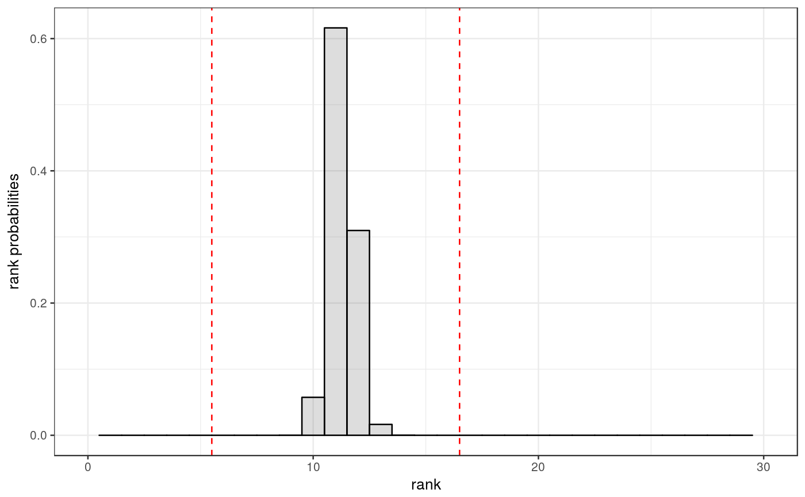

SDP_rnk_pred produces the (estimated) probability vector for the
rank of the solution of a random semidefinite program.
SDP_rnk_pred(n, m, beta = 1, C = 0.2)
| n | size of matrix |
|---|---|
| m | number of constraints |
| beta | Dyson index specifying the underlying (skew-) field:
|
| C | estimated constant in the variance of index normalized curvature measures |
The output of SDP_rnk_pred is a is a list of three elements:
P: the estimated probability vector (in form of a tibble
to avoid confusion about the index),
bnds: the Pataki bounds,
plot: a histogram plot (ggplot2) of the probability vector
(the vertical lines indicate the Pataki bounds).
The semidefinite program is assumed to be of the form
$$\underset{X\in\mathcal{S}^n}{\text{min}} \quad \langle C,X\rangle_{\mathcal{S}^n}$$
$$\text{subject to} \quad \langle A_k,X\rangle_{\mathcal{S}^n}=b_k ,\quad k=1,\ldots,m$$
$$X\succeq 0.$$
Generically, if a solution to this program exists, then it is unique, and its
rank satisfies some inequalities, known as Pataki Inequalities. In the natural
random model the rank probabilities can be expressed in terms of curvature
measures, which is what this function estimates. See the vignette accompanying
the symconivol package for more details and
references.
Package: symconivol
library(tidyverse)#>#> #> #> #>#> #> #>SP <- SDP_rnk_pred(30,150) print(SP$P)#> # A tibble: 31 x 2 #> `k=` `Prob(rk_sol=k)=` #> <int> <dbl> #> 1 0 0. #> 2 1 0. #> 3 2 0. #> 4 3 0. #> 5 4 0. #> 6 5 0. #> 7 6 9.45e-33 #> 8 7 7.99e-19 #> 9 8 4.09e-10 #> 10 9 9.50e- 5 #> # ... with 21 more rowsprint(SP$bnds)#> [1] 6 16print(SP$plot)